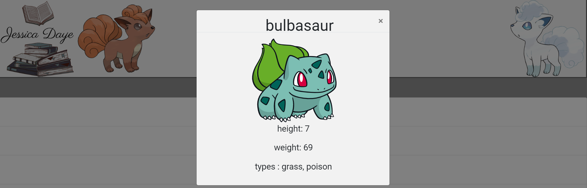

Work
Pokedex
This project is designed to portray a simple application that lists the original 150 Pokémon of the Kanto region including their height, types and moves while pulling information from an external API. The web application is created using HTML, CSS and JavaScript. Data is loaded from an external API and allows the user to view certain information about a specific Pokémon.
 Check Me OutmyFlyx
This project is designed to build the server-side component of a “movies” web application. The web application will provide users with access to information about different movies, directors, actors, and genres. Users will be able to sign up, update their personal information, and create a list of their favorite movies.
React AngularMeet app
This project is designed to build a serverless, progressive web application (PWA) with React using a test-driven development (TDD) technique. The application uses the Google Calendar API to fetch upcoming events.
Check Me Out